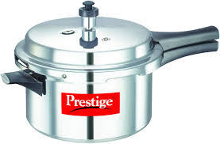
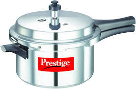

Aliquam erat volutpat. Vivamus a libero tempus, laoreet urna sed, porta dui. Nulla et neque metus. Sed quis
Praesent placerat auctor lacus, eu vulputate turpis lobortis sed. Nunc feugiat, ligula eu fermentum malesuada,
lectus orci condimentum erat, sodales cursus lectus >sem eu ante. Sed tortor sem, tincidunt ac arcu vel,
tempor
sollicitudin lacus. Nunc rutrum interdum cursus. Cras sit amet augue mi. Pellentesque a pellentesque turpis.
Proinet semper justo. Suspendisse malesuada libero id dolor hendrerit ullamcorper. Vivamus eget
Post Tags
food
cooking
meats
An enlightening post about pressure cookers
Aliquam erat volutpat. Vivamus a libero tempus, laoreet urna sed, porta dui. Nulla et neque metus. Sed quis
Praesent placerat auctor lacus, eu vulputate turpis lobortis sed. Nunc feugiat, ligula eu fermentum malesuada,
lectus orci condimentum erat, sodales cursus lectus >sem eu ante. Sed tortor sem, tincidunt ac arcu vel,
tempor
sollicitudin lacus. Nunc rutrum interdum cursus. Cras sit amet augue mi. Pellentesque a pellentesque turpis.
Proinet semper justo. Suspendisse malesuada libero id dolor hendrerit ullamcorper. Vivamus eget
Post Tags
food
cooking
meats
Aliquam erat volutpat. Vivamus a libero tempus, laoreet urna sed, porta dui. Nulla et neque metus. Sed quis
Praesent placerat auctor lacus, eu vulputate turpis lobortis sed. Nunc feugiat, ligula eu fermentum malesuada,
lectus orci condimentum erat, sodales cursus lectus >sem eu ante. Sed tortor sem, tincidunt ac arcu vel, tempor
sollicitudin lacus. Nunc rutrum interdum cursus. Cras sit amet augue mi. Pellentesque a pellentesque turpis.
Proin
et semper justo. Suspendisse malesuada libero id dolor hendrerit ullamcorper. Fusce eu nunc nulla.
Vivamus eget
posuere tellus. Nunc placerat nec nulla vel porta.
 
